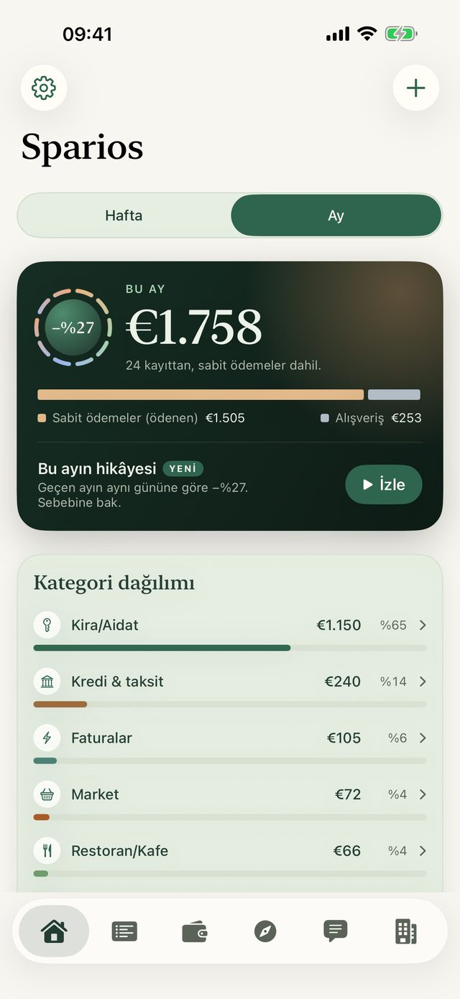
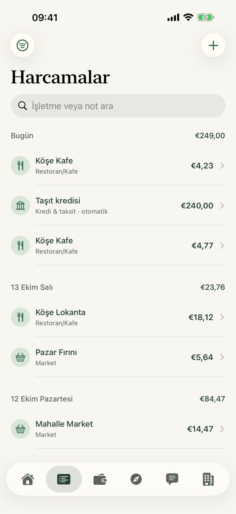
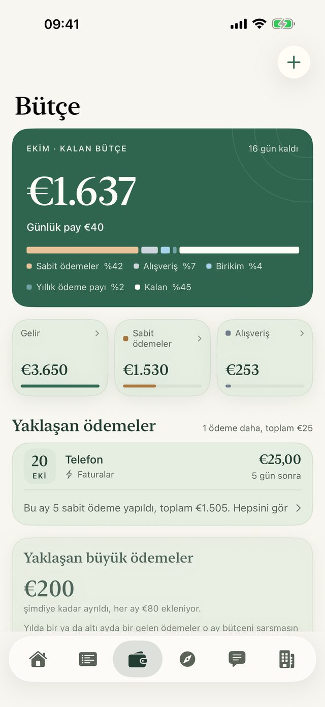
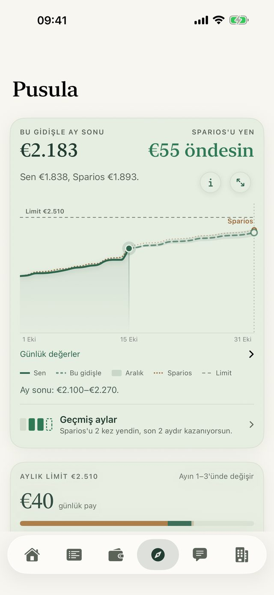
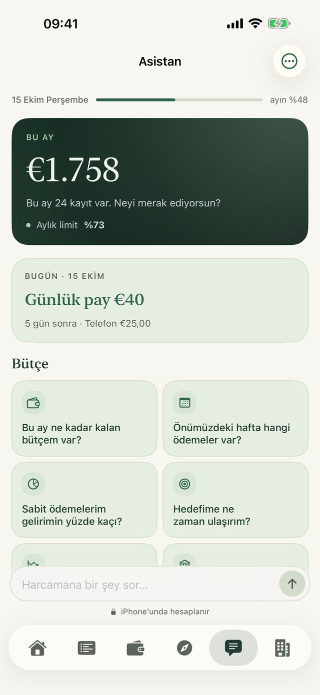
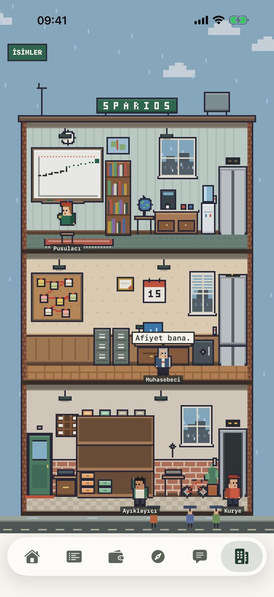

Öde.
Sparios not alsın.
Kendi kendine dolan bir harcama defteri. Wallet’taki hangi kartla ödersen öde, bu ay ne kaldığını gör. Banka girişi yok, hesap yok, hiçbir şey iPhone’undan çıkmaz.
Yakında App Store’da
Her ödeme zaten yazılı
Kestirmeler’de bir kez otomasyon kur; her Apple Pay ödemen işletmesi ve tutarıyla birkaç saniye içinde Sparios’a düşsün. Kira, fatura ve nakit de aynı listede.

Ne kaldığını bil
Gelirini bir kez ekle. Kira, abonelik ve taksitler günü gelince düşer; Sparios bu ay ne kaldığını ve günde ne kadar harcayabileceğini gösterir.

Ay sonunu önceden gör
Pusula alışkanlıklarına bakıp ayın nereye gittiğini gösterir. Sparios her akşam kendi çizgisini çizer. Onun altında kalırsan ayı sen kazanırsın.

Paranı sor
“Bu ay markete ne kadar harcadım?” Asistan kendi kayıtlarından, iPhone’unda cevap verir.

Hepsini küçük bir ofis yürütür
Sparios’ta beş piksel çalışan yaşar. Kurye bugünün fişlerini getirir, Ayıklayıcı dosyalar, Pusulacı ay sonunu hesaplar. Ne yaptıklarını görmek için birine dokun.

Paran sende kalır.
- Hesap yok. Banka girişi yok.
- Takip yok, reklam yok, veri toplama yok.
- İnternete yalnız kur için çıkar, o da sen açarsan.